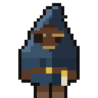
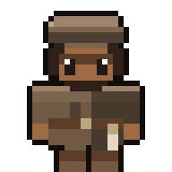
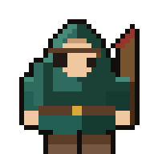
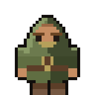
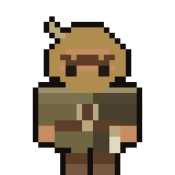
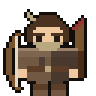
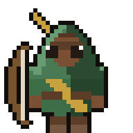
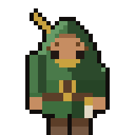
O laço
Quatro passos, nesta ordem. É um ciclo: o passo IV devolve você ao I.
IRecrutar
Você abre um saco na taverna e sai um fora-da-lei. Pago em $BOUNTY — que você precisa comprar antes.
IIAssaltar
Manda ele pro terreno. Ele quebra caixote, acha baú, evita armadilha e volta com butim.
IIIConsertar
Cada assalto gasta o arco. Arco gasto rende menos e arrisca quebrar na fusão. Consertar queima $BOUNTY.
IVFundir
Dois viram um melhor — se a chance permitir. A chance é mostrada antes de você confirmar, sempre.
Os seis ranks
A raridade não é uma etiqueta: é o que o Xerife paga pela cabeça dele. O rank
se mede na própria moeda do jogo, então dizer o rank já é dizer o preço.
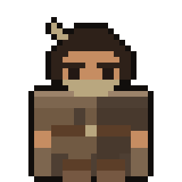
Ninguém
5 $BOUNTY
- Aparece em
- 45%
- Peso
- 1,0×
- Conserto
- 15%
- Stats
- 20–45
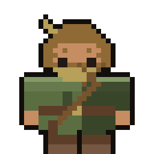
Ladrão
25 $BOUNTY
- Aparece em
- 27%
- Peso
- 1,5×
- Conserto
- 18%
- Stats
- 35–60
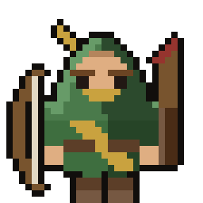
Foragido
100 $BOUNTY
- Aparece em
- 15%
- Peso
- 2,2×
- Conserto
- 21%
- Stats
- 48–72
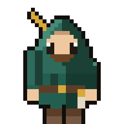
Procurado
500 $BOUNTY
- Aparece em
- 8%
- Peso
- 3,2×
- Conserto
- 25%
- Stats
- 60–82
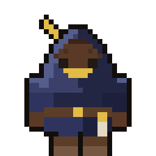
Inimigo da Coroa
2.500 $BOUNTY
- Aparece em
- 4%
- Peso
- 5,0×
- Conserto
- 30%
- Stats
- 72–92
Lenda
10.000 $BOUNTY
- Aparece em
- 1%
- Peso
- 8,0×
- Conserto
- 36%
- Stats
- 84–99
Nunca dois iguais
Isto não é slogan. É uma conta que dá pra conferir.
561.254.400
aparências visualmente distintas — combinando rank, porte do corpo, cinco tipos de
cabeça, quatro formatos de olho, quatro túnicas, sete equipamentos, barba, lenço,
pele, cabelo e desvio de matiz do pano. Somando os três stats, que rolam com duas
casas decimais, o espaço passa de 6,2 quintilhões de combinações.
Com 10.000 recrutamentos, a chance de existirem dois idênticos fica abaixo de
0,000001%. Cada fora-da-lei nasce de uma seed de 32 bytes: a mesma
seed sempre devolve o mesmo boneco, com os mesmos stats e os mesmos pixels.
Os traços são derivados por sha256 de propósito — é a única função
de hash que roda igual no Node e dentro de um contrato Solidity, então a corrente
consegue provar o que o gerador produziu.
A economia
Jogo P2E costuma morrer do mesmo jeito: emissão fixa esvazia o caixa, o caixa
zera, o jogo acaba num dia só. Estas quatro decisões existem pra que isso não
aconteça — e nenhuma delas é gentileza, todas são matemática.
Emissão variável
O caixa nunca paga um valor fixo por cabeça. Ele paga uma fração de si mesmo por dia, repartida por peso.
Consequência: o caixa decai de forma assintótica e nunca chega a zero. Se a entrada secar, a recompensa encolhe suave — o jogo fica menor em vez de morrer.
Raridade disputa fatia, não fura o caixa
Uma Lenda ganha 8× o que um Ninguém ganha. Mas o total pago por dia é o mesmo, tenha o bando uma Lenda ou cem.
Raridade redistribui entre jogadores; não aumenta o dreno. É o que permite manter a graça de caçar rank sem que o topo esvazie o caixa comum.
Vida útil medida em trabalho
O arco gasta por assalto feito, não por dia no calendário. Quem para de jogar não é punido: sumiu três meses, volta e acha tudo como deixou.
E a fazenda de bot que roda 24 horas gasta no dobro da velocidade de quem joga metade do tempo — logo paga o dobro de conserto. O bot vira cliente em vez de vazamento.
Capturado, não queimado
Vida útil zerada não destrói o NFT. O fora-da-lei é capturado: para de trabalhar, some do rateio, mas continua na sua carteira, com a arte e transferível. Sai pagando resgate.
Pro cálculo dá no mesmo — quem está preso não divide o caixa. A diferença é que ninguém acorda com um NFT apagado pelo contrato.
por_cabeca = (r x Caixa) x peso / soma(pesos)
soma de todos = r x Caixa sempre, independente do bando
estado de repouso: Caixa* = entrada / r
Um exemplo com números reais, pra ninguém se iludir: com r = 0,5% ao dia,
caixa de R$ 100 mil e mil foras-da-lei ativos, cada um rende R$ 0,50 por dia.
Um saco a R$ 50 paga a si mesmo em 100 dias — e só se o caixa continuar
em R$ 100 mil, o que exige R$ 15 mil de venda por mês, para sempre.
Os cinco terrenos
Da estrada ao castelo: mais caixote, mais baú, mais armadilha. O mapa sai de uma
seed, então dá pra auditar depois — importante quando o butim vale dinheiro.
Abaixo, os baús aparecem revelados; em jogo eles ficam escondidos dentro dos caixotes.
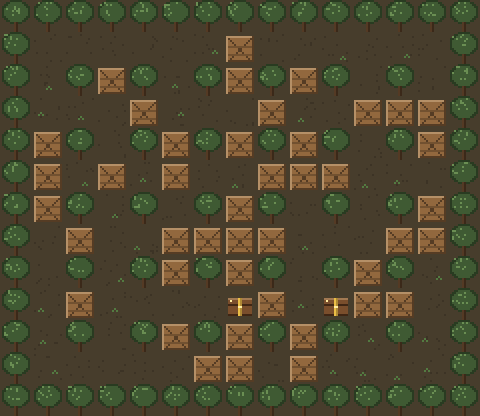
A Estrada
42% caixote · sem armadilha
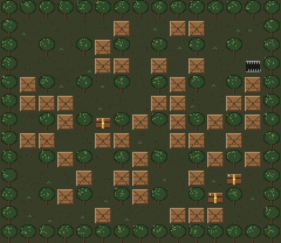
A Mata
50% caixote · 3% armadilha
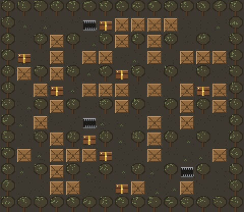
A Ponte
56% caixote · 7% armadilha
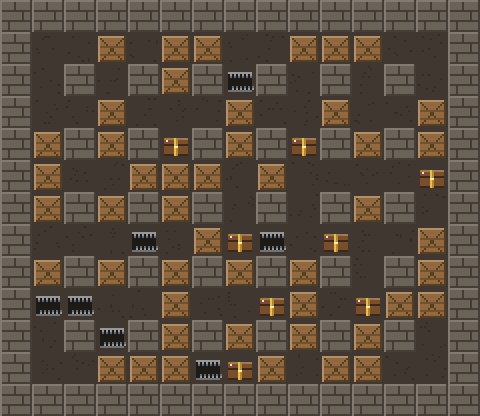
A Vila
62% caixote · 12% armadilha
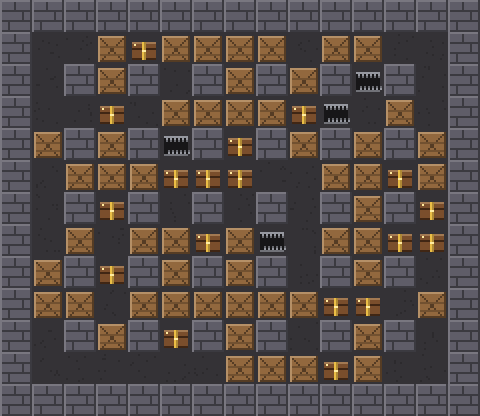
O Castelo
68% caixote · 18% armadilha
Onde isto está hoje
O estado real do projeto, sem maquiagem.
- Rede
- Robinhood Chain testnet
- Chain ID
- 46630
- Contratos
- Publicados e verificados
- Gas na mainnet
- 0,061 gwei
- Arte
- Gerada por código, sem IA
- Servidor de jogo
- Não precisa: o contrato paga direto
Jogar na testnet
Precisa de MetaMask. O jogo te guia pra pegar ETH e $BOUNTY de teste.
O que ainda não existe, e o que pode dar errado
- Os contratos estão só na testnet, com código aberto no explorador e 63 testes automáticos, mas nenhuma auditoria externa. O token daqui não vale nada.
- Não é jogo de habilidade: o mapa mostra o bando trabalhando, mas quanto cada um rende é o contrato que decide (peso do boneco × caixa do dia).
- A economia é sustentável em token, mas o valor em reais depende de o jogador médio gastar mais do que saca. Isso é trabalho de game design, não de tokenomics, e é onde a maioria dos P2E falha.
- Saco pago com resultado aleatório é loot box. As chances são exibidas antes de cada confirmação por decisão de projeto — mas o tema tem discussão regulatória aberta no Brasil.
- Nada aqui é promessa de retorno financeiro.